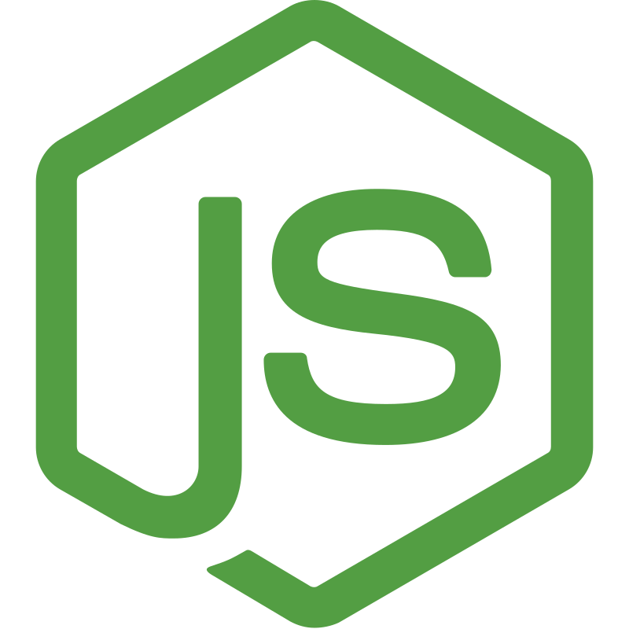
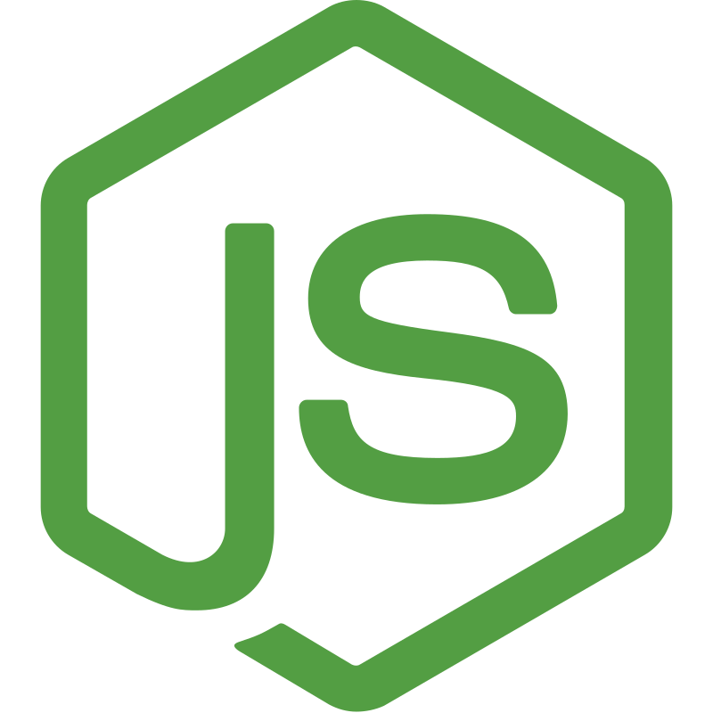

Sobre mim
Me formei como técnico em Segurança do Trabalho em 2023 pelo IFPE, mas decidi seguir na área da Computação após participar de um Projeto de Inovação em 2023 pelo Sebrae, onde pude evoluir e aprender bastante sobre desenvolvimento web e inovação, além de desenvolver imensamente minhas soft skills. Em 2024 iniciei o curso de Ciência da Computação no CIn, onde venho me desenvolvendo e aprendendo cada vez mais. Já fui monitor de Matemática Discreta e atualmente sou monitor de Introdução à Programação. Almejo entrar no CITi para colaborar ao máximo com o time de integrantes, promovendo o crescimento da empresa e evolução profissional tanto minha quanto dos meus colegas.
Filmes e séries


Curiosidades
- Sou fluente em inglês.
- Em 2014, com 10 anos, entrei com os jogadores dos EUA numa partida de copa do mundo.
- Sonho em viajar e talvez morar nos EUA.
- Tenho um Porquinho-da-india.
Habilidades
Hard Skills


 



Soft Skills
- Querência
- Adaptabilidade
- Liderança
- Comunicação
- Inteligência emocional
- Gestão de tempo
Projetos
JuridIA foi um projeto da disciplina de Desenvolvimento de Software feito com o objetivo de auxiliar pessoas na interpretação de documentos complexos a partir da integração de uma IA ao sistema. O projeto foi feito utilizando ReactJS, NodeJS e PostgreSQL.
GithubNutreAI foi mais um projeto da disciplina de Desenvolvimento de Software feito com o objetivo de auxiliar pessoas na melhoria de sua alimentação através de uma dieta personalizada com a integração de uma IA. O projeto foi feito utilizando React+TS, NestJS e PostgreSQL e ainda continua em desenvolvimento e processo de melhoria.
GithubSpace Defender foi um projeto da disciplina de Introdução à Programação feito com o objetivo de praticar a biblioteca PyGame e o assunto de Programação Orientada a objetos. O jogo foi inspirado no clássico jogo da nave que atira no espaço.
GithubGuess-a-mon é um projeto pessoal antigo feito com o objetivo de praticar conceitos de integração de APIs e Vanilla JavaScript, além de divertir a mim e meus amigos. O jogo consiste em adivinhar o nome do Pokemon que aparece na tela, tendo níveis de dificuldade e filtro por geração. Como meta, será realizado um processo de reformulação/melhoria na aplicação.
Github